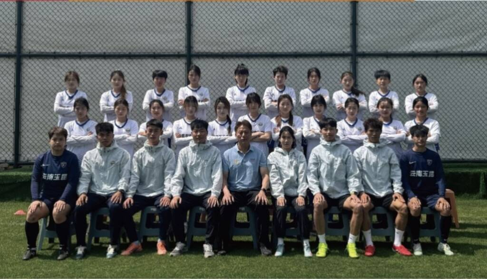
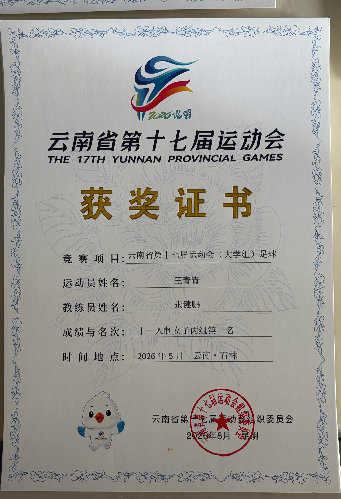
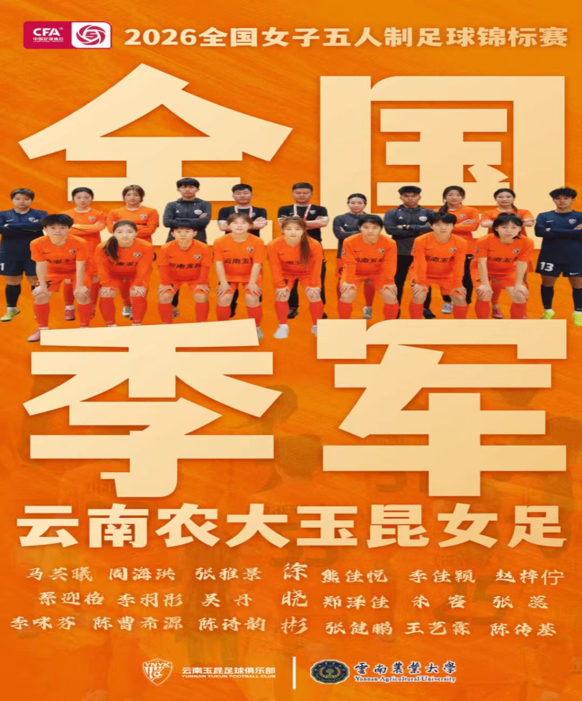
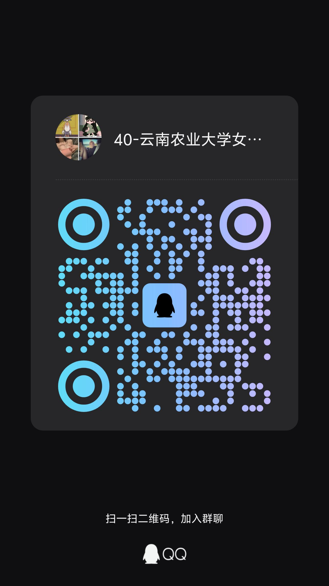

训练竞技部
统筹日常足球训练、战术打磨，组建参赛队伍，对接校内外赛事安排。
训练竞技
YNAU WOMEN'S FOOTBALL
TRAINING · COMPETITION · SPIRIT
绿茵逐梦，
永不言弃的女足精神。
我们是谁
本社团成立于云南农业大学体育学院，依托校园体育发展需求与女足运动推广愿景组建，以弘扬女足精神、深耕校园女子足球运动，强健学子体魄、锤炼坚韧品格为宗旨。
社团创立至今，历经多年稳步发展，本社团涵盖各年级热爱足球的女生。日常常态化开展基础球技训练、战术配合演练、队内友谊赛，定期组织校内女足联赛、跨校女足交流赛、参加全国赛事，同时搭配体能拓展、足球规则科普等配套活动。
近年来，社团围绕校园女足普及与竞技水平提升推进品牌建设，形成了"训练常态化、赛事体系化、交流多元化"的发展特色，多次代表学校参加省级高校女子足球赛事并斩获佳绩，也为喜爱足球的女生搭建了专属成长平台。
未来，社团将继续夯实训练基础，拓宽对外交流渠道，吸纳更多女足爱好者，以绿茵赛场为载体，传递永不言弃的体育精神，助力校园女子足球文化持续蓬勃发展。
组织架构
统筹日常足球训练、战术打磨，组建参赛队伍，对接校内外赛事安排。
训练竞技负责社员招新、档案管理、日常考勤，策划社团团建与队内交流活动。
组织建设运营社团社交平台，拍摄赛事素材，制作海报、推文，对外展示女足风采。
宣传展示管理训练物资、球衣器材，统筹赛场饮水、医疗应急，保障训练赛事顺畅。
后勤保障对接校内其他社团、外校女足队伍，洽谈友谊赛，寻求校外资源与合作。
外联交流普及足球规则，培养校内女足裁判，讲解赛事判罚标准，开展足球知识小课堂。
裁判教研活动剪影
从基础训练到全国赛场，从队内对抗到跨校交流。
每一帧都是女足社的拼搏注脚。
品牌赛事

01女子足球队全体队员在省运会的舞台上奋力拼搏、不放弃，最终夺得了省运会冠军。
省运夺冠 · 奋力拼搏 · 不言放弃
02云南农大玉昆女子足球队在浙江杭州的赛场上努力拼搏、互相团结、鼓励，最终取得了第三名的好成绩。
全国季军 · 团结互助 · 拼搏进取社团荣誉
十一人制女子丙组第一名。女子足球队在省运会舞台奋力拼搏，最终斩获冠军，为校争光。
云南农大玉昆女子足球队在全国赛场上团结拼搏，最终取得第三名的好成绩。
第十七届运动会大学组足球预赛暨2025年云南省"勤锻炼"大学组足球联赛第一名。
2025年中国大学生五人制足球联赛女子组全国总决赛第六名，全国舞台展现实力。
